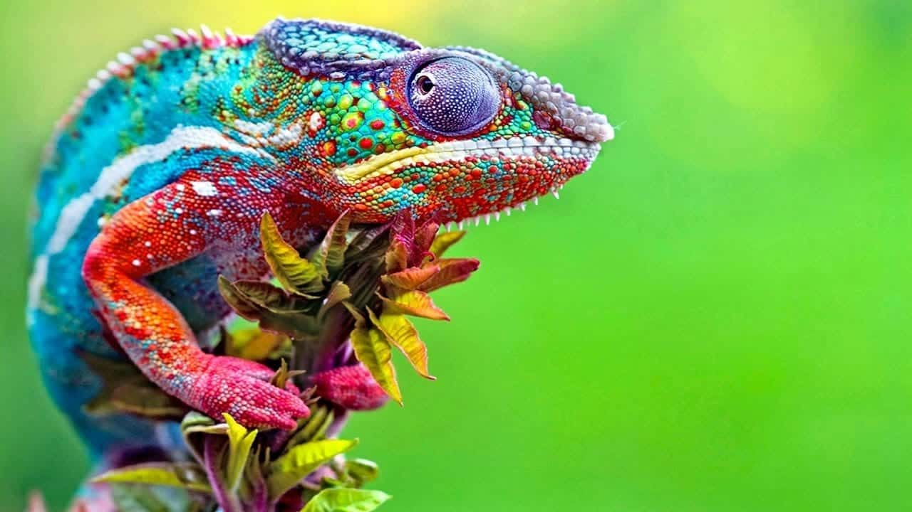
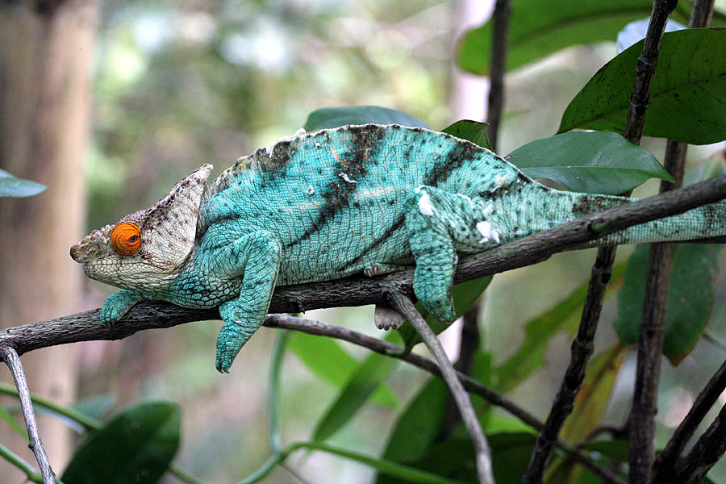
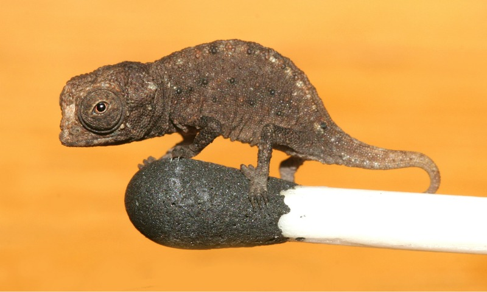

Os camaleões são mestres na arte da sobrevivência silenciosa, com características perfeitamente ajustadas para a vida na natureza. Com movimentos calculados que imitam o balançar das folhas ao vento e uma anatomia altamente especializada.
A anatomia ocular dos camaleões é uma das mais avançadas do reino animal. Seus olhos são completamente independentes e envoltos por pálpebras em formato de cone, deixando apenas a pupila exposta. Isso permite uma observação de 360 graus sem a necessidade de mover o pescoço. O mais impressionante é que o cérebro do camaleão processa as duas imagens separadamente. Enquanto o olho direito foca intensamente em uma presa, calculando a distância para o bote, o esquerdo pode rastrear o céu em busca de predadores. Quando a presa é confirmada, ambos os olhos se alinham para frente, garantindo uma percepção de profundidade impecável.
Quando o assunto é caça, eles possuem um mecanismo de ataque formidável. A língua de um camaleão pode ultrapassar duas vezes o comprimento do seu próprio corpo e funciona como uma mola tensionada. Um osso especial na base da boca acumula energia elástica e, quando liberada, a língua atinge a presa em menos de 0,07 segundos — uma aceleração que supera a de muitos carros esportivos. A ponta da língua não é apenas coberta por um muco altamente viscoso, mas também forma uma estrutura de ventosa que cria um vácuo no momento do impacto, sugando o inseto instantaneamente.
A vida nas copas das árvores exige um equipamento de escalada perfeito. Os camaleões possuem patas zigodáctilas, onde os dedos são unidos em grupos de dois e três, formando pinças exatas para agarrar galhos de diferentes espessuras com extrema firmeza. Além disso, a maioria das espécies arbóreas possui uma cauda preênsil, que funciona essencialmente como um quinto membro. Essa cauda pode se enrolar nos galhos para garantir estabilidade extra durante a caça ou enquanto o animal descansa.
Existem cerca de 214 espécies de camaleões espalhadas pelo mundo, habitando predominantemente a África, a ilha de Madagascar, o sul da Europa e partes da Ásia. Eles estão presentes desde florestas úmidas e densas até desertos áridos e montanhas de grande altitude. Cada espécie apresenta características morfológicas específicas para o seu microclima.
Camaleão-Pantera (Furcifer pardalis): Reconhecido pela sua coloração intensa, este nativo de Madagascar utiliza suas cores como um verdadeiro mapa geográfico. A paleta exata de um macho revela a região específica da ilha de onde ele provém. Variantes da região de Ambanja tendem ao azul e verde, enquanto os de Nosy Be apresentam tons de azul-turquesa profundo.

Camaleão-do-Iêmen (Chamaeleo calyptratus): Facilmente identificado pelo grande "capacete" (casco ósseo) no topo da cabeça, que cresce à medida que o animal envelhece. Em seu habitat árido no Oriente Médio, essa estrutura atua como um coletor de água natural. O formato do casco canaliza as raras gotas de orvalho da manhã ou da neblina diretamente para a boca do animal, garantindo hidratação em um ambiente de escassez.

Camaleão-de-Jackson (Trioceros jacksonii): Camaleão-de-Jackson (Trioceros jacksonii): Os machos dessa espécie ostentam três chifres frontais (um no focinho e dois acima dos olhos), lembrando a estrutura de um tricerátops. Esses chifres são ferramentas de combate utilizadas em disputas territoriais. Os machos entrelaçam os chifres e tentam empurrar o rival para fora do galho, em um verdadeiro teste de força e equilíbrio.

Camaleão-de-Parson (Calumma parsonii): Um dos gigantes da família, habitando as florestas úmidas de Madagascar. Além de ser incrivelmente robusto e pesado, o Parson se destaca pela sua longevidade. Enquanto muitas espécies menores vivem apenas de 2 a 5 anos, este gigante pode ultrapassar a marca de 12 anos em cativeiro sob condições ideais, um ciclo de vida notável para o grupo.

Camaleão-pigmeu-de-folha (Brookesia micra): No extremo oposto, este é um dos menores vertebrados já descobertos. Tão minúsculo que um adulto cabe na cabeça de um palito de fósforo, ele habita o chão da floresta em Madagascar. Para sobreviver a predadores, ele mimetiza perfeitamente uma folha seca caída, permanecendo imóvel entre os detritos.

A manutenção de um camaleão em ambiente doméstico exige precisão técnica. Eles são animais sensíveis ao estresse e essencialmente pets de observação. O terrário precisa replicar as condições exatas da natureza. A ventilação é um fator crítico: terrários de tela são indispensáveis, pois o acúmulo de ar estagnado leva rapidamente a infecções respiratórias. Além disso, eles não bebem água parada em potes; dependem do reflexo da luz em gotas d'água nas folhas, exigindo sistemas de gotejamento ou borrifadores automáticos.
A iluminação é o pilar da saúde desses répteis. A presença de lâmpadas emissoras de radiação UVB é inegociável. Sem a exposição correta a esses raios, o camaleão é incapaz de sintetizar a vitamina D3, o que impede a absorção de cálcio pelo organismo, resultando em doenças ósseas metabólicas severas. A dieta também requer atenção: é estritamente insetívora, e os insetos oferecidos devem ser previamente nutridos de forma rica (processo conhecido como gut-loading) e polvilhados com suplementos vitamínicos.
É necessário desconstruir a ideia mais difundida sobre esses animais: camaleões não mudam de cor para imitar o fundo em que estão. A camuflagem natural deles já é altamente eficiente quando estão em seu estado de repouso, exibindo tons de verde, marrom ou cinza que se misturam perfeitamente à folhagem e aos galhos. A mudança drástica de coloração tem propósitos muito mais complexos do que a simples ocultação.
A alteração de cor é, na verdade, um sistema avançado de comunicação visual e regulação térmica. A pele do camaleão possui camadas de células chamadas cromatóforos, que contêm pigmentos, e iridóforos, que contêm nanocristais capazes de refletir a luz. Tons escuros geralmente indicam estresse, submissão ou a necessidade de absorver mais calor solar. Cores brilhantes e contrastantes são usadas por machos para demonstrar dominância territorial, intimidar rivais ou atrair fêmeas. A cor reflete o estado fisiológico e emocional do animal, funcionando como um indicador em tempo real de suas condições internas.